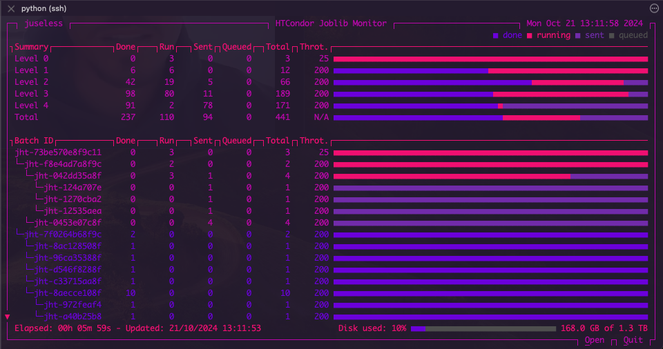

6.8. Parallelizing julearn with Joblib#
Warning
Make sure you are using the latest version of julearn, as we are
actively developing and fine-tuning these packages to improve performance.
Older versions of julearn might have a huge computational impact when used
with joblib.
As with scikit-learn, julearn allows you to parallelize your code using
Joblib. This can be particularly useful when you have a large dataset or
when you are running a computationally expensive operation that can be easily
computed in parallel.
Without going into details about parallel and distributed computing, the idea is to split the computation into smaller tasks that can be executed independently from each other. This way, you can take advantage of multiple processors to do them in parallel. A very clear example of this situation is when you are estimating a model’s performance using cross-validation. In this case, you can parallelize the computation of the different folds, as the training and testing of each fold are independent from the other folds.
Mostly all modern computers have multiple processors or cores, which allows
to run multiple tasks at the same time. If you are familiar, you might
have noticed that scikit-learn already has a parallelization mechanism using
the n_jobs parameter. julearn is actually using scikit-learn, so it is
possible to use the n_jobs parameter. If you want to read more about how
scikit-learn parallelizes its code, you can check the section
Parallelism on scikit-learn’s documentation.
In short, the n_jobs parameter in scikit-learn allows you to specify the
number of jobs to run in parallel. If you set it to -1, it will use all the
processors available, which is usually the best option for most cases.
One of the explicit ways to control parallelization in scikit-learn and
julearn is to use a joblib’s
parallel_config context manager. The following
snippet will run the code in parallel using the "loky" backend
with 4 processors.
from joblib import parallel_config
creator = PipelineCreator(problem_type="classification")
creator.add("zscore")
creator.add("svm")
with parallel_config(backend="loky", n_jobs=4):
scores = run_cross_validation(
X=X,
y=y,
X_types=X_types,
data=df_data,
model=creator,
problem_type="classification",
)
Importantly, this sets the number of parallel processes that joblib dispatches
but does not set the number of threads (i.e. another low-level parallelization
mechanism) that each process uses. The "loky" backend is quite intelligent,
but can’t always determine the optimal number of threads to use if you don’t
want to use 100% of the resources. You can set the number of threads per
process by setting the inner_max_num_threads parameter in the context
manager. For example, to make sure that only 4 processors are used and each
process uses only 1 thread, you can do the following:
from joblib import parallel_config
creator = PipelineCreator(problem_type="classification")
creator.add("zscore")
creator.add("svm")
with parallel_config(backend="loky", n_jobs=4, inner_max_num_threads=1):
scores = run_cross_validation(
X=X,
y=y,
X_types=X_types,
data=df_data,
model=creator,
problem_type="classification",
)
Massively parallelizing julearn with Joblib and HTcondor#
Sometimes even with multiple processors, the computation can take a long time. As an example, assuming a model that takes 1 hour to fit, a 5 times 5-fold cross-validation takes 25 hours of computation. If you add a grid search to find the best hyperparameter using another 5-fold CV, and this grid has 10 hyperparameters sets to test, this adds another 1250 hours of computation. This is a total of 1275 hours. In technical terms, this are 1275 core-hours, which is a unit of processing time in a single core. With 4 processors, this is 318 hours, which is almost 13 days of computation. If the model takes 10 hours to fit, this goes to 12750 core-hours, which is almost 4.5 months with 4 processors.
As you can see in the following table, sometimes we might need to use hundreds of processors to obtain results within reasonable time spans.
Total core-hours |
Number of processors |
Time (approx.) |
|---|---|---|
1250 |
1 |
52 days |
1250 |
4 |
13 days |
1250 |
16 |
3.25 days |
12750 |
1 |
1.4 years |
12750 |
4 |
4.4 months |
12750 |
16 |
1.1 months |
At the INM-7, were we have mainly developed this library, we have a
computational cluster that uses HTCondor. To overcome this limitation of
julearn and joblib, we have created the joblib-htcondor backend. This
allows joblib to submit each task as a job in an HTCondor queue, allowing to
massively parallelize computation.
By simply calling register_htcondor from the joblib_htcondor package
and configuring the backend, we can easily parallelize the computations as in
the following example:
from joblib import parallel_config
from joblib_htcondor import register_htcondor
register_htcondor("INFO") # Set logging level to INFO
creator = PipelineCreator(problem_type="classification")
creator.add("zscore")
creator.add("svm")
with parallel_config(
backend="htcondor",
n_jobs=-1,
request_cpus=1,
request_mem="4Gb",
):
scores = run_cross_validation(
X=X,
y=y,
X_types=X_types,
data=df_data,
model=creator,
problem_type="classification",
cv=cv,
)
This will submit each task to the HTCondor queue, and the computation will be
done in parallel. The request_cpus parameter specifies the number of CPUs
to request for each job, and the request_mem parameter specifies the
amount of memory to request.
Note
Note that the register_htcondor function sets the logging level to
"INFO", which means that you will see information regarding the HTCondor
backend. If you want to see less information, you can set the logging level to
"WARNING". If you believe that there might be an issue with the backend,
you can set the logging level to "DEBUG" to see more information that
can be later shared with the developers.
Nevertheless, as it is, it will submit as many jobs as outer folds in the cross-validation, and it will rarely work for large projects as we need to take into account other factors.
Data Transfer#
When submitting jobs to a cluster, we need to take into account that the data
needs to be transferred between workers. The joblib-htcondor backend uses
filesystem-based data transfer, which means that the data will be stored in
a file that must be accessible by all the workers. The location of the shared
directory can be specified with the shared_data_dir parameter.
For example, at the INM-7, we can have a shared directory at
/data/project/supercool_research. Our example then becomes:
from joblib import parallel_config
from joblib_htcondor import register_htcondor
register_htcondor("INFO")
creator = PipelineCreator(problem_type="classification")
creator.add("zscore")
creator.add("svm")
with parallel_config(
backend="htcondor",
n_jobs=-1,
request_cpus=1,
request_mem="4Gb",
shared_data_dir="/data/project/supercool_research",
):
scores = run_cross_validation(
X=X,
y=y,
X_types=X_types,
data=df_data,
model=creator,
problem_type="classification",
cv=cv,
)
Pool#
As in any computational cluster, most probably you will be required to submit
a job to a queue, which will then run the run_cross_validation()
function that will then submit more jobs to the queue. This is not a problem,
but it needs to be possible to submit jobs from within a job. Check with your
cluster’s admin team and ask for further instructions. Most probably you’ll
also need to specify to which pool the jobs will be submitted. This can be
done with the pool parameter. For us, this is head2.htc.inm7.de:
from joblib import parallel_config
from joblib_htcondor import register_htcondor
register_htcondor("INFO")
creator = PipelineCreator(problem_type="classification")
creator.add("zscore")
creator.add("svm")
with parallel_config(
backend="htcondor",
n_jobs=-1,
request_cpus=1,
request_mem="4Gb",
shared_data_dir="/data/project/supercool_research",
pool="head2.htc.inm7.de",
):
scores = run_cross_validation(
X=X,
y=y,
X_types=X_types,
data=df_data,
model=creator,
problem_type="classification",
cv=cv,
)
Recursive parallelization#
Let’s say we have the following pipeline:
creator = PipelineCreator(problem_type="classification")
creator.add("zscore")
creator.add(
"svm",
kernel="rbf",
C=[0.001, 0.01, 0.1, 1, 10, 100, 1000],
gamma=[0.001, 0.01, 0.1, 1, 10, 100, 1000],
)
This is indeed a pipeline with a hyperparameter search. A 5-fold Grid Search
approach will evaluate 49 different models, 5 times each. And this will happen
for every outer fold. So if we use joblib-htcondor as in the previous
example, each task could also benefit from parallelism, by submitting each
inner fold of each hyperparameter combination as a separate job. This is
called recursive parallelization and we can instruct the backend to allow this
by setting the max_recursion_level parameter to 1:
from joblib import parallel_config
from joblib_htcondor import register_htcondor
register_htcondor("INFO")
creator = PipelineCreator(problem_type="classification")
creator.add("zscore")
creator.add("svm")
with parallel_config(
backend="htcondor",
n_jobs=-1,
request_cpus=1,
request_mem="4Gb",
shared_data_dir="/data/project/supercool_research",
pool="head2.htc.inm7.de",
max_recursion_level=1,
):
scores = run_cross_validation(
X=X,
y=y,
X_types=X_types,
data=df_data,
model=creator,
problem_type="classification",
cv=cv,
)
Warning
scikit-learn parallelizes many algorithms internally by default. So if
you set the max_recursion_level to something different than 0, you
might end-up with thousands of thousands of jobs. Please READ THE WHOLE
DOCUMENTATION before using this parameter, as it will be explained in more
detail.
But beware! This will submit 245 (5 times 49) jobs for each outer fold. For a 5 times 5-fold CV, this means 6125 jobs. This can be a lot of jobs, but not for HTCondor. It is though an issue with the data transfer. If each job requires 500 MB of data, this means 3.1 TB of data transfer, which requires 3.1 TB of disk space in the shared directory.
Throttling#
Indeed, even if we queue all of the previous 6125 jobs at once, we are also
limited by the number of slots in the cluster. We can throttle the number of
jobs that are submitted at once by setting the throttle parameter. This
parameter specifies the number of jobs that can be either running or queued at
the same time, thus also limiting the number of files in the shared directory.
joblib-htcondor will submit jobs until the throttle is reached, and then it will wait until a job finishes to submit a new one. The complicated part is that with recursive parallelization, the effect of throttling can be quite complex. If you have a throttle of 100, and you have 5 outer folds, each with 5 inner folds, and each inner fold with 49 hyperparameter combinations, you will have 6125 jobs. If you throttle at 100, you will have 100 jobs running at the same time, but you will have 2525 jobs queued or running, since the throttle is applied to the inner folds independently.
We can also set the throttle parameter by level, by specifying a list of throttles. For example, to throttle at 25 for the outer folds and at 50 for the inner folds, we can do the following:
from joblib import parallel_config
from joblib_htcondor import register_htcondor
register_htcondor("INFO")
creator = PipelineCreator(problem_type="classification")
creator.add("zscore")
creator.add("svm")
with parallel_config(
backend="htcondor",
n_jobs=-1,
request_cpus=1,
request_mem="4Gb",
shared_data_dir="/data/project/supercool_research",
pool="head2.htc.inm7.de",
max_recursion_level=1,
throttle=[25, 50],
):
scores = run_cross_validation(
X=X,
y=y,
X_types=X_types,
data=df_data,
model=creator,
problem_type="classification",
cv=cv,
)
This indeed will create a maximum of 25 jobs for the outer folds and 50 jobs for the inner folds, resulting in 1275 jobs in total. If each job requires 500 MB of data, this means 637.5 GB of disk space in the shared directory.
Overhead#
The overhead of submitting jobs to a cluster is not negligible. Each job submission requires some time, and the data transfer also requires some time. This overhead can be quite significant, and it is important to take it into account when parallelizing your code. The joblib-htcondor backend is intended to be used for large computations, where the overhead is negligible with respect to the computation.
Scikit-learn parallelization#
The rule is quite simple, if it has an n_jobs parameter, it can be
parallelized using joblib. This is the case for most of the scikit-learn’s
algorithms. While the developers of scikit-learn are doing a great job and
currently working on documenting how this is done for each algorithm, this is
still not that evident.
Most importantly, the default is always n_jobs=-1. This means that it will
use joblib for everything. In combination with joblib-htcondor, this can
be a big issue. Thus, the recommendation is to always set the n_jobs
parameter to 1 for every learning algorithm that you use, unless is an
ensemble in which every estimator takes hours to fit.
A clear example on when NOT to use n_jobs=-1 is when using a
RandomForestClassifier. If left as default,
this will queue one job for each decision tree, resulting in hundreds of
relatively small jobs which will take a lot of time to complete, given the
overhead.
The following is a non-exhaustive list of scikit-learn’s algorithms that might
make sense to set the n_jobs parameter to -1 or leave as default:
StackingClassifierandStackingRegressorThis model will first fit the base estimators in parallel for the whole data. Then it will fit and score the base estimators in parallel for each of the internal CV folds, to generate the meta-features.
VotingClassifierandVotingRegressorSimilar to the stacking models.
Hyperparameter searchers
Most of the hyperparameter searchers in scikit-learn will parallelize the search for the best hyperparameters. Either at the internal CV level or at both the hyperparameter search space and the internal CV level, depending on the searcher.
Visualizing Progress#
When submitting jobs to a cluster, it is important to know the progress of the computation. The joblib-htcondor package has a text-based user interface that allows to monitor the progress of the computation, an important feature when submitting several recursive parallel jobs.
First, we need to set the export_metadata parameter to True in the
parallel_config context manager. This will create medatada files that
will be used by the UI.
from joblib import parallel_config
from joblib_htcondor import register_htcondor
register_htcondor("INFO")
creator = PipelineCreator(problem_type="classification")
creator.add("zscore")
creator.add("svm")
with parallel_config(
backend="htcondor",
n_jobs=-1,
request_cpus=1,
request_mem="4Gb",
shared_data_dir="/data/project/supercool_research",
pool="head2.htc.inm7.de",
max_recursion_level=1,
throttle=[25, 50],
export_metadata=True,
):
scores = run_cross_validation(
X=X,
y=y,
X_types=X_types,
data=df_data,
model=creator,
problem_type="classification",
cv=cv,
)
Once the jobs are submitted and running, we will see something like this with
the condor_q command:
The first row is the original job that is running run_cross_validation. The rest are joblib-htcondor jobs.
Now this is difficult to understand, so we can use the joblib-htcondor UI, pointing to the shared directory:
python -m joblib_htcondor.ui --path /data/project/supercool_research
While in the main window, we can press the O key to open a root file.
That is, the file that contains the metadata of the first batch of jobs that
triggered the rest of the jobs:
Once we press ENTER, we will see then see the following:
The top row displays a summary per level of recursion. In this case, we have two levels of recursion. The first level is the outer folds (5 times 5-fold) and full final model fitting, and the second level is a Grid Search (110 hyperparameter combinations, 5-fold CV). The throttle is set to 26 for the outer fold and 60 for the inner folds.
On the bottom, we an see that it has been running for almost 4 days and we are using 10% of the 1.3 Tb of shared disk space.
A more complex model might look like this:
This is a stacked model with a hyperparameter search created as follows:
# Create the pipeline for the sepal features, by default will apply to "sepal"
model_sepal = PipelineCreator(problem_type="classification", apply_to="sepal")
model_sepal.add("filter_columns", apply_to="*", keep="sepal")
model_sepal.add("zscore")
model_sepal.add("svm", C=[0.1, 1])
# Create the pipeline for the petal features, by default will apply to "petal"
model_petal = PipelineCreator(problem_type="classification", apply_to="petal")
model_petal.add("filter_columns", apply_to="*", keep="petal")
model_petal.add("zscore")
model_petal.add("rf", n_jobs=1)
# Create the stacking model
model = PipelineCreator(problem_type="classification")
model.add(
"stacking",
estimators=[[("model_sepal", model_sepal), ("model_petal", model_petal)]],
final_estimator=LogisticRegression(n_jobs=1),
apply_to="*",
cv=4,
)
As you can see, even the
LogisticRegression model has an
n_jobs parameter that must be set to 1!